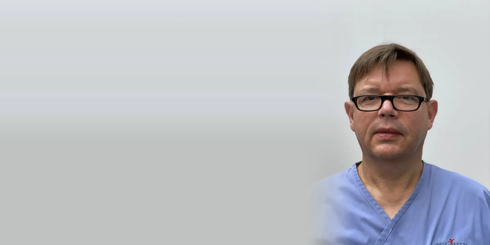
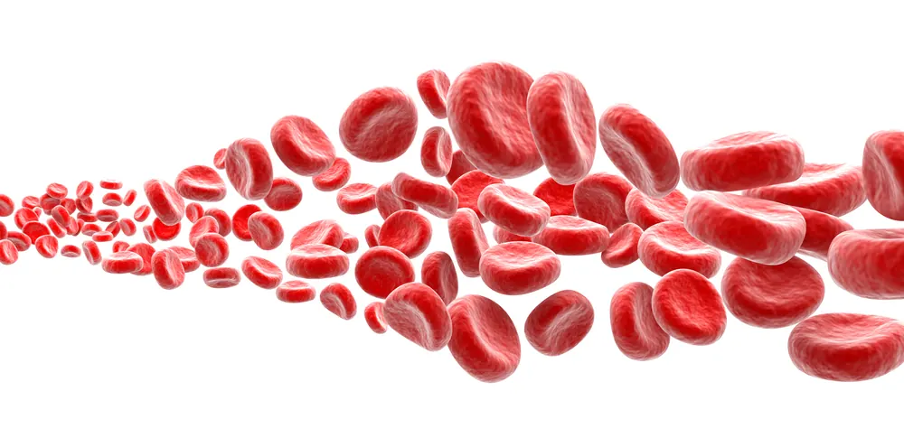
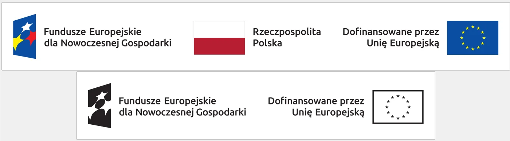
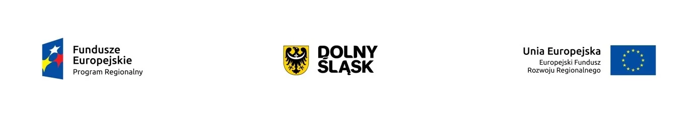

Ortopedia
- Chirurgia
- Konsultacja chirurgiczna
- USG diagnostyczne
Chirurgia artroskopowa, traumatologia sportowa, chirurgia ręki i stopy, ortopedia dziecięca.

Prywatny ośrodek specjalistyczny założony przez dr n. med. Macieja Kentla. Ortopedia i traumatologia sportowa, neurologia, kardiologia i reumatologia przy ul. Ślężnej 169.
Umów wizytę: 71 302 75 65Rejestracja: pon.-czw. 8-20, pt. 8-19
dr n. med. Maciej Kentel, szef kliniki
Leczenie dobieramy indywidualnie, na podstawie wnikliwej konsultacji i zleconych badań. W trudnych przypadkach organizujemy wielodyscyplinarne konsylia lekarskie.
Chirurgia artroskopowa, traumatologia sportowa, chirurgia ręki i stopy, ortopedia dziecięca.
lek. Joanna Janczarska, środa 15:30-18:00.
Gabinet zabiegowy. Zmiany opatrunków, iniekcje do- i okołostawowe, zakładanie i zdejmowanie opatrunków gipsowych. W ramach konsultacji wykonujemy badanie USG.
Medycyna molekularna. Terapia preparatami osocza bogatopłytkowego (PRP), komórkami macierzystymi i terapia Orthokine® z własnej krwi pacjenta.
Sami uprawiamy sport. Rozumiemy specyfikę leczenia ludzi aktywnych.
Zespół eMKaMED
Profil naszej placówki to przede wszystkim ortopedia i traumatologia sportowa. Specjalizujemy się w chirurgii artroskopowej i małoinwazyjnych zabiegach. Taki zabieg to krótszy pobyt w klinice, mniej bólu, szybsza rehabilitacja i powrót do sprawności.
Przeprowadzamy też zabiegi ortopedyczne w technice otwartej, z użyciem sprzętu wiodących światowych firm medycznych. Opiekujemy się pacjentem od przygotowania do zabiegu, przez pobyt w klinice, po okres pooperacyjny.
Lekarze chirurgii artroskopowej i traumatologii sportowej, chirurgii ręki i stopy oraz ortopedii dziecięcej. Stale podnoszą kwalifikacje na krajowych i międzynarodowych zjazdach i sympozjach.
lek. Wiesław Wargocki
dr hab. n. med. Artur Milnerowicz
lek. Adam Paszkowski
lek. Joanna Janczarska
mgr Monika Kentel, mgr Magdalena Ładyga, mgr Bartosz Lubarski, mgr Dawid Grul, mgr Aleksander Kowalski
Dni przyjęć lekarzy. Godzinę wizyty ustala rejestracja: 71 302 75 65.
| Lekarz | pn | wt | śr | cz | pt |
|---|---|---|---|---|---|
| Ortopedia | |||||
| dr n. med. Maciej Kentel | |||||
| dr n. med. Sebastian Krupa | |||||
| lek. Maciej Starzyk | |||||
| dr n. med. Marcin Szymański | |||||
| lek. Jakub Madej | |||||
| dr n. med. Witold Wnukiewicz | |||||
| prof. Paweł Reichert | |||||
| lek. Tomasz Jarowicz | |||||
| lek. Krzysztof Korolczuk | |||||
| lek. Silvester Aldobašić | |||||
| lek. Kajetan Starzyk | |||||
| lek. Robert Staykov | |||||
| lek. Łukasz Strynowicz | |||||
| Ortopedia dziecięca | |||||
| dr n. med. Michał Barnaś | |||||
| Neurologia | |||||
| lek. Joanna Janczarska | 15:30-18:00 | ||||
Terapia Orthokine® to leczenie, w którym do chorego stawu podaje się białka przeciwzapalne i czynniki wzrostu uzyskane z krwi pacjenta. Stąd określenie autoterapia: preparat nie zawiera substancji obcych dla organizmu.

Schemat terapii Orthokine® krok po kroku. Kliknij, aby powiększyć.
Staramy się, aby kontakt z pacjentem obejmował przygotowanie do zabiegu, pobyt w klinice i okres pooperacyjny.
Gotówką lub kartą podczas przyjęcia na oddział albo przelewem, najpóźniej dobę przed zabiegiem.
Przyjmuje dyrektor zarządzający w poniedziałki w godz. 12-13, w formie pisemnej lub ustnej, na miejscu w ośrodku.
Wydajemy na wniosek pacjenta, jego przedstawiciela ustawowego lub osoby upoważnionej. Wniosek można złożyć w rejestracji, wysłać pocztą albo skan na pacjent@emkamed.com.pl.
Dokumentację przygotowujemy do 14 dni roboczych. Odbiór w dni powszednie w godz. 8:00-16:00, po telefonie od pracownika, lub wysyłka pocztą.
Prywatny Gabinet Urazowo-Ortopedyczny Maciej Kentel (Centrum Medyczne eMKaMED) rozwija nowe metody leczenia stawów dzięki Funduszom Europejskim.
Badania kliniczne nad rekonstrukcją więzadła ACL stawu kolanowego i stożka rotatorów stawu ramiennego w technice artroskopowej, z ortobiologią i komórkami macierzystymi. Cel: krótszy powrót pacjentów do sprawności. Projekt nr FENG.01.01-IP.02-0916/24, realizacja od 01.11.2025.

Projekt zrealizowany w ramach Regionalnego Programu Operacyjnego dla Województwa Dolnośląskiego na lata 2014-2020.

Od 01.11.2025 rozpoczynamy realizację projektu „Opracowanie innowacyjnych metod rekonstrukcji stawu ramiennego i stawu kolanowego z zastosowaniem materiału ortobiologicznego oraz innowacyjnych metod fizjoterapii”.
PARP poinformowała nas, że nasz projekt nr FENG.01.01-IP.02-0916/24 został wybrany do dofinansowania. Cieszymy się niezmiernie i zabieramy się do pracy.
Do zespołu dołączył dr n. med. Michał Barnaś, specjalista ortopedii i traumatologii narządu ruchu dzieci i dorosłych, kształcony m.in. w Bochum, Rothenburgu i Görlitz.
Mapa: ul. Ślężna 169, Wrocław